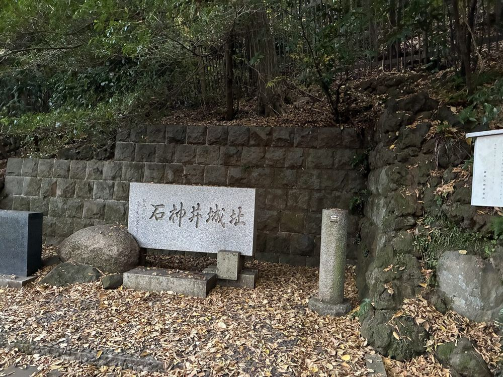

A 500-Year-Old Samurai Castle, Hiding in a Tokyo Park
An elderly man was casting a fishing line into Sanpoji Pond, in water so still it looked like glass. Twenty minutes away by train, Ikebukuro's neon skyline was doing its usual noisy thing. Here, in Shakujii Park, the loudest sound was cicadas.
I'd come to scout this spot properly, even though I already knew the outline of its story. Shakujii Park sits in Nerima Ward, a residential district most visitors to Tokyo never think to visit — and that's exactly the point. There's no ticket booth, no gift shop, no queue. Just a park where local families rent rowboats on weekends, retirees walk their dogs along the same paths every morning, and almost nobody — including many of the people who live here — knows what's buried in the ground a few hundred meters from the water.

The castle nobody remembers
In 1477, this was the site of Shakujii Castle, the stronghold of the Toyoshima clan, who had controlled this part of Musashino for generations. That year, the samurai commander Ota Dokan — the same man credited with founding the original castle that would later grow into Edo, and eventually Tokyo — laid siege to it and took it. The Toyoshima clan's power in the region ended there. Today, what remains is a low earthen embankment and a stone marker, easy to miss unless you know to look for it.
What locals actually know
I asked one of the park staff, half out of curiosity and half to confirm what I already suspected, whether locals knew the castle ruins were there. "Honestly, a lot of people who live nearby have no idea," she said. That's the gap that makes this walk worth doing with someone who knows where to look: a 500-year-old battlefield, and on a Saturday morning it's just the place where you take the dog before it gets too hot.
The udon after
No walk through this part of Tokyo is complete without Musashino udon — the local specialty along the old Seibu Ikebukuro Line towns. Thick, hand-pulled noodles with real bite, dipped into a hot, slightly sweet-savory broth loaded with pork and mushrooms. It's not a dish built for tourists; it's what the neighborhood actually eats on a Saturday. After an hour of walking, it's exactly right.
Walk it with a local
Hidden Shakujii Park Walk with Samurai Ruins & Udon — small group, ★5.0 on GetYourGuide.
Check dates & book →Planning more of west Tokyo?
Guests often pair this walk with a look at other Tokyo experiences along the same train line, from Zen temples to sake breweries.
Some links on this page are affiliate links — booking through them supports this site at no extra cost to you.